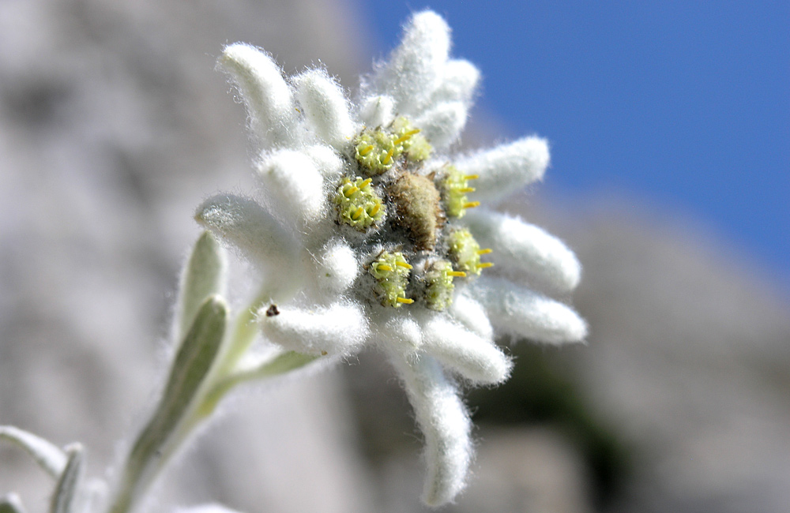
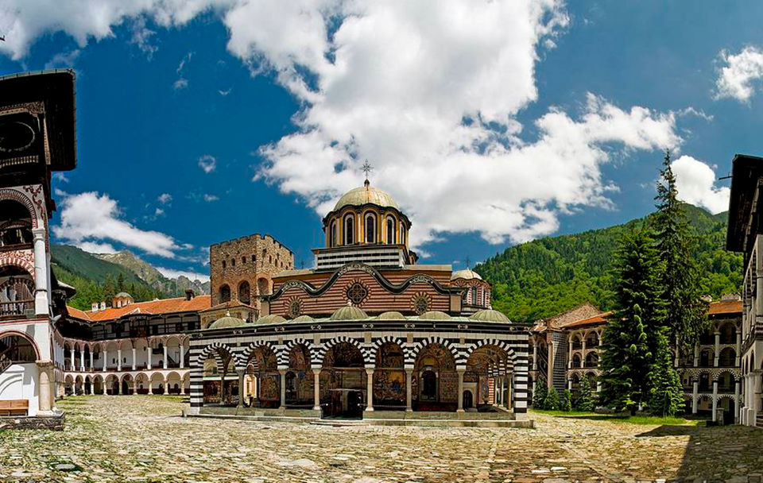

Рила е най-високата планина в България и на целия Балкански полуостров. В европейската “класация” заема престижното 6-то място, като пред нея са: Кавказ (връх Елбрус - 5642 м), Алпите (връх Монблан - 4807 м), Сиера Невада (връх Муласен - 3482 м), Пиренеите (връх Ането - 3404 м) и вулканът Етна (3340 м). Тя е средищна планина за полуострова и негов главен орографски и хидрографски възел. Съставна част е от Рило-Родопския масив и заема неговия северозападен край. Най-старото име на планината е Доункас, дадено и от траките. Означава място с много вода. Тракийско е и другото и име - Роула, което славяните видоизменят на Рила. То също е свързано с многоводието на планината (означава “водна планина”).
Основният градивен елемент в планината е гранитът. Срещат се още мрамор, кристалинни шисти и други. Двукратното заледяване на Рила е играло важна роля при формирането на нейния релеф. Множеството циркуси, добре очертаните трогови (ледникови) долини, алпийските върхове и глациалните езера са доказателство за това.
Климатът на Рила се обуславя от нейното географско положение и е на границата между континенталния и преходносредиземноморския климат, а микроклиматът - от височинните пояси и от почвената и растителна покривка. Най-ниската средномесечна температура е отчетена през февруари на връх Мусала - минус 11.6° С. Пак там е измерена и абсолютната минимална температура досега в България - минус 31.2° С (през февруари). През август средната температура на върха е 5.4° С, а абсолютната максимална температура, измерена на Мусала е 18.7° С.
Ветровете в Рила духат основно от запад и югозапад. По-рядко и по-умерени са северозападните и североизточните, а северните, южните и югоизточните ветрове не играят съществена роля. Количеството на валежите е значително, като на Мусала падат годишно около 1200 мм, от които близо 80 на сто са от сняг. По средновисоките и алпийските части на планината снежната покривка често надхвърля 2 метра. Всички тези изброени климатични фактори създават предпоставки за лавини (особено в най-алпийските части на планината).
Рила има следните граници (по посока на часовниковата стрелка): на север - река Джубрена, Клисурската седловина и река Клисурчица я отделят от Верила. Самоковското поле, Река Бистрица, Боровецката седловина, реките Малка Сливница, Сливница и Марица (до Долна баня) я делят от Ихтиманска Средна гора. Костенецко-Долнобанска котловина, река Марица, до сливането и с река Яденица, отделят Рила от най-югоизточните издънки на Ихтиманска Средна гора. На изток граничи с Родопите чрез реките Яденица и Юндолска, седловина Юндола, Люта река, Аврамова седловина, река Дрешенец и река Места до Разложката котловина. На юг - Разложката котловина. От Пирин е отделена чрез Раблевска река, седловината Предел, реките Кулина, Еловица и Градевска. На запад - Долината на река Струма от сливането и с Градевска до сливането ґ с Джерман. Долината на река Джерман от сливането и със Струма до Дупнишкото поле.
В така очертаните граници Рила заема площ от 2396 кв. километра.
Въз основа на релефа ґ и на характерни морфографски белези, планината се подразделя на 4 главни дяла - Източна, Средна, Северозападна и Югозападна. За граници им служат реките - Черни Искър, Леви Искър, Бели Искър, Рилска, Илийна, Белишка и Станкова, както и билните седловини - Кобилино бранище, Кадиин гроб и Горни куки. Всеки от главните дялове, от своя страна, се подразделя на няколко поддяла, носещи наименованието на най-високия или средищен връх.
Най-висок (абсолютно) и най-обширен от 4-те основни дяла е Източна Рила, която обхваща 37% от общата площ на планината. От своя страна Източна Рила се дели на 7 поддяла. Три от тях - Мусаленският, Маришкият и Ковашкият са разположени на Мусаленското главно било, а останалите 4 - Славовският, Белмекенският, Ибърският и Мустачалският на Ибърското главно било. Двете главни била се пресичат при възловия връх Маришки чал, разположен на главния вододел на Балканския полуостров, между водосборните басейни на реките Искър, Марица и Места. В Източна Рила се извисяват 11-те най-високи върха на планината, начело с Мусала (2925.4 м). Източно от него (свързва ги тесният скалист ръб Трионите) е вторият - Малка Мусала (2902 м). До тях е и третият по височина и единствен между 2800 и 2900 метра - Иречек (2852 м). В този дял са езерните групи: Мусаленски езера, Маричини езера, Ропалишки езера, Якорудски езера и др. В Мусаленската група е и най-високото езеро в Рила - Леденото (2709 м), разположено непосредствено северно под връх Мусала. В Източна Рила има 9 туристически хижи и 2 високопланински заслона. На връх Мусала се намира най-високата метеорологична станция в Югоизточна Европа, построена през 1932 г.
Средна Рила е най-малкият дял на планината - заема едва 9% от площта ґ. Нейният релеф обаче е най-алпийски със средна надморска височина - 2077.17 м. Средна Рила има две главни била - Скакавишко и Рилецко, разделени от долината на Рилска река. Свързва ги връх Канарата (2691 м), който заема челно място в орохидрографската характеристика на цялата планина и е известен като “пъп” на Рила. По Скакавишкото главно било се открояват 3 поддяла - Скакавишки, Маринковишки и Шишковски. По Рилецкото било също има 3 дяла - Канарски, Рилецки и Бричеборски, т.е. Средна Рила има 6 поддяла. Най-високият връх е Карааланица (Черна поляна) - 2716 м (14-и по височина в Рила). Забележителни са и върховете: Рилец (2713 м), Йосафица (2697 м), Аладжа слап (2684 м), Водния чал (2683 м). Средна Рила е богата на ледникови езера. Тук са: Рибните езера, Прекоречките езера, Мермерските езера, Караомеришките езера, Джендемските езера, Манастирските езера. В този дял се намира и най-голямото глациално (ледниково) езеро на Балканския полуостров - Смрадливото, с площ 212 дка. В Средна Рила има 3 туристически хижи и един високопланински заслон.
Северозападна Рила, която се дели на ниска и висока (алпийска) част, заема 24% от общата площ на планината и е трета по големина и по средна надморска височина - 1555.73 м. Ниската и част обхваща продълговатата Говедарска котловина и т. нар. Лакатишка Рила, която е като предпланина на основния масив на Рила. Високата (алпийска) част се разделя на Мальовишки, Дамгски, Калински, Отовишки и Кабулски поддял. В Мальовишкия поддял се намират най-забележителните алпийски обекти на Рила и на България. Това са върховете: Мальовица (2730 м, символ на българския алпинизъм и планинарство), Купените (най-високият от тях - Големият Купен е най-високият в Северозападна Рила - 2731 м), Еленин, Орловец, Злия зъб, Двуглав, Ловница, Петлите, Орлето и ред други. В този дял на планината се намират едни от най-големите и значими езерни групи - Урдините езера, Мальовишките езера, Еленските езера, Градинските езера, Поповокапските езера, както и най-голямата и известна езерна група на Балканския полуостров - 7-те Рилски езера. В Северозападна Рила има изградени 10 туристически хижи и 2 високопланински заслона.
Югозападна Рила обхваща 30% от планината - най-ниският дял, със средна надморска височина 1306.63 м. Дели се на две главни била - Северно, съставено от Мечивръшки и Цареввръшки поддял и Южно, разделено на Парангалишки, Капатнишки и Хърсовски поддял. Най-висок в този дял е Ангелов връх (2643 м). По-забележителни са също Голям Мечи (2618 м), Узуница (2606 м), Царев връх (2378 м), Капатник (2170 м) и др. В Югозападна Рила има 2 туристически хижи. На територията на този дял се намира един от най-старите биосферни резервати в България - “Парангалица”, известен с вековните си смърчове.
От Рила водят началото си едни от най-известните български реки, изливащи водите си както към Черно, така и към Бяло море, т.е. през нея минава главният вододел на Балканите. Към Черно море се оттича единствено р. Искър, но нейният водосборен район в Рила е достатъчно голям, включващ началните ґ притоци Черни, Бели и Леви Искър, както и много други по-малки. За начало на река Искър се приемат Чанакските езера в Северозападна Рила, близо до циркуса на 7-те Рилски езера. Най-дългата българска река - Марица, както и р. Места, се вливат в Бяло море, извън територията на България. Първата изтича от Маричините езера, южно от връх Мусала, а втората отводнява южните склонове на Източна Рила. Обширен е и водосборният район на река Струма (извираща от Витоша), която обира водите на западните и югозападните склонове на Рила и също се влива в Бяло море, на територията на Гърция. По-важните рилски притоци са Рилска река, Джерман, Дупнишка и Благоевградска Бистрица.